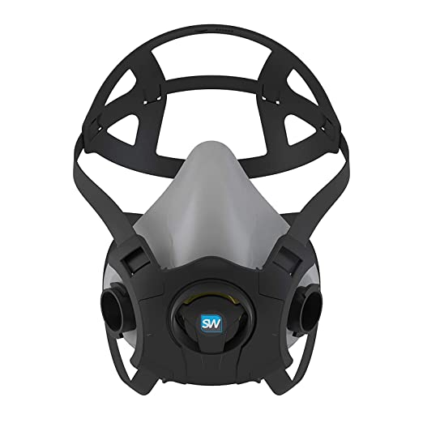
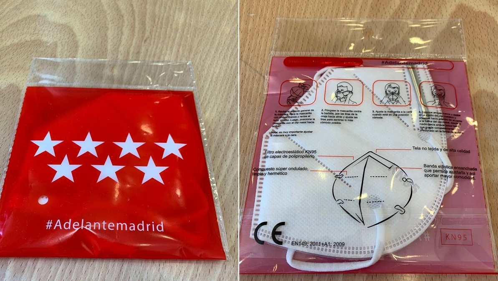
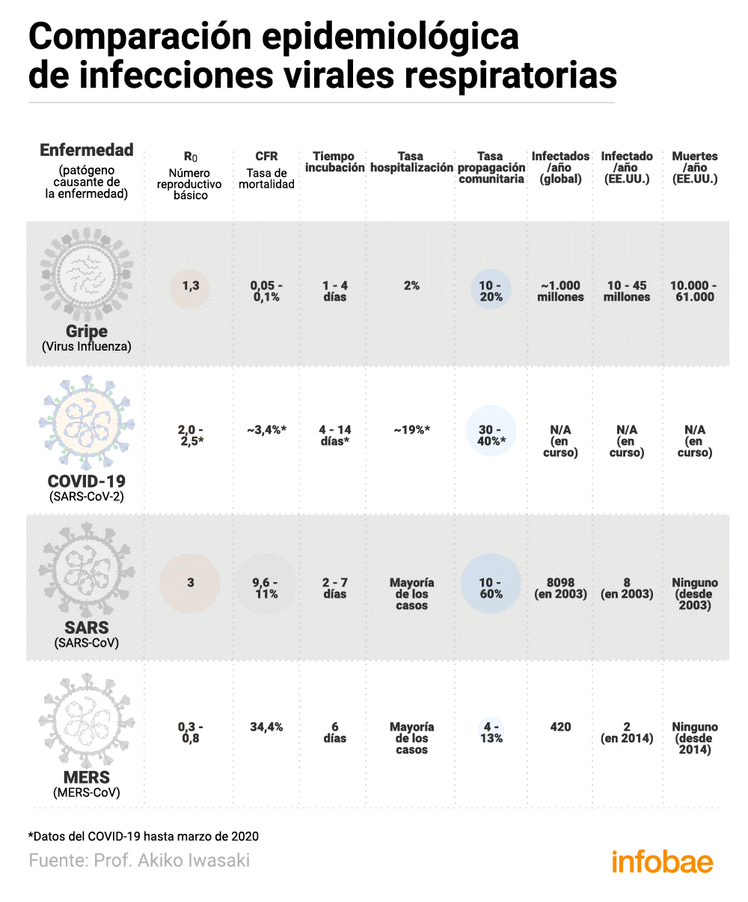
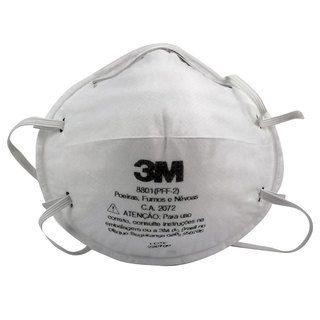
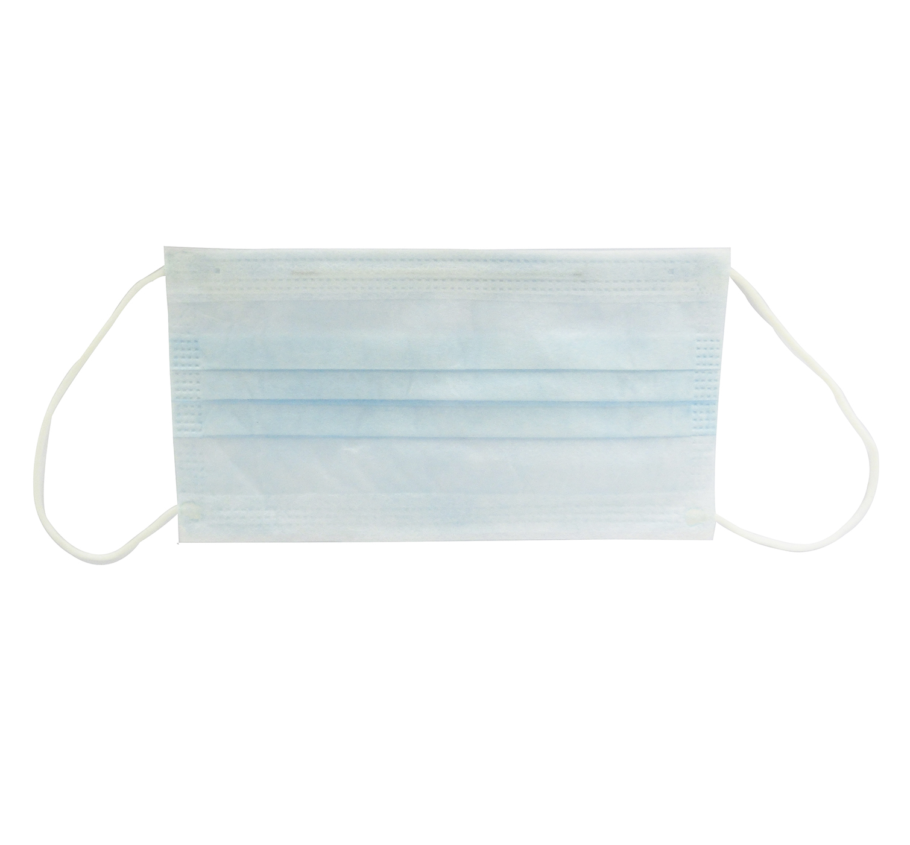

⚡⚡(HILO OFICIAL) : CRISIS DEL CORONAVIRUS ☣SARS-CoV2☣
SIGUELO EN DIRECTO
ESPAÑA, necesitamos ayuda!!Somos La Resistencia!!Os lo dije: A partir del 18 de Enero pasaria algo gordo... *Tema mítico* : - Será en Enero: Líder supremo de Irán advierte sobre 'fuerte represalia' Noticia: - Primera víctima mortal en China de una enfermedad desconocida Algo anticipé en 2015 en forocoches
La Reduccion de poblacion comenzara en CHINA con un virus LETAL - ForoCoches Y como sabemos que es tu hilo de FC so magufo?Podeis comprobarlo Usuario Burdel king contraseña: mcrib68 pero ojo me baneo el marica de ILITRI si entrais es bajo vuestra responsabilidad.Los chinos se olieron el percal y elaboraron el suyo

y por supuesto en Burbuja en 2016
Internacional: - cuidado con los chinos que la lian Proyección del crecimiento poblacional (German Federal Statistical Office) ACOJONA VAMOS A LA REALIDAD Y CON DATOS El nuevo virus de China(2019-nCoV), que se dectectó por primera vez en diciembre de 2019 en un mercado de Wuhan, es un tipo de microorganismo diferente de cualquier otro coronavirus humano descubierto hasta ahora.Los coronavirus son una gran familia de virus respiratorios que pueden causar enfermedades que van desde el resfriado común hasta el síndrome respiratorio de Medio Oriente y el síndrome respiratorio agudo severo (SARS).Protocolo de actuacion del ministerio de sanidad https://www.mscbs.gob.es/profesionales/saludPublica/ccayes/alertasActual/nCov-China/documentos/Procedimiento_2019-nCoV.pd
ENLACES Google covid19 la Map- OMS COVID-2019 Informe de situación BNO News BNO News últimos casos de coronavirus Operations Dashboard for ArcGIS

todas las páginas del hilo hasta la 18763 (25-03-20 sobre las 4 de la mañana) @Poleadornato MEGA ******* DIARIO DE LA CRISIS VIRUS WUHAN***************** @Cave canum nos trae los previos *Tema mítico* : - ⚡(HILO OFICIAL) : CRISIS DEL CORONAVIRUS ☣WUHAN☣ ENERO Dia 11 Primera muerte en China por un nuevo virus misterioso | DW | 11.01.2020 Dia 17 Mueren dos personas en China por un nuevo virus Dia 18 La OMS vigila el avance del nuevo virus que desde China ya ha cruzado dos fronteras Dia 20 El mortal virus de Wuhan se expande por China Dia 21El nuevo virus chino se contagia entre humanos China confirma seis muertos y más de 300 casos del coronavirus de Wuhan Dia 22 9 muertos 440 casos China teme que el nuevo coronavirus pueda 'mutar y propagarse' mientras aumenta el número de muertos Repulsivas imágenes del mercado de Wuhan antes de su cierre, se vendian animales salvajes junto mariscos Se decreta cuarenta a 11 millones de personas de la ciudad de WUHAN Dia 23 Huanggang de 7 millones de habitantes, otra ciudad de China que queda cerrada por el virus China cierra una tercera ciudad, de medio millón de habitantes, por el brote de coronavirus Coronavirus chino: La OMS decide no declarar la alerta internacional | Últimas noticias en directo La CNN acusa a China de censurar imágenes del epicentro del coronavirus: el Gobierno teme que mute Dia 24 ya van 25 muertos China confirma la primera muerte fuera del epicentro del virus y amplía la cuarentena a otras dos ciudades China amplía la cuarentena a 33 millones de personas y construye de urgencia un hospital contra el coronavirus Muere repentinamente director ejecutivo de la OMS - La Razón Confirman un segundo caso de coronavirus en EE.UU. y monitorean a otros 63 posibles infectados Las autoridades chinas confirman el primer caso de curación del nuevo coronavirus El brote viral chino podría ser '10 veces más grande que el SARS', dice un experto Coronavirus de China: Francia confirma dos casos y EEUU otros dos Dia 25 van 41 muertos y 1354 infectados (lo que dicen) Coronavirus de China: Francia confirma tres casos, EEUU dos y Australia uno Detectado en España un caso sospechoso de neumonía asociada al coronavirus de origen chino China cierra otras cinco ciudades por el coronavirus, lo que afecta ya a 56 millones de personas Hospitales desbordados y sin apenas material intentan contener la escalada del coronavirus en Wuhan El coronavirus de China puede ocultar sus síntomas y propagarse más rápido Coronavirus: Estados Unidos advirtió a China en 2017 sobre escape del virus en laboratorio Hong Kong declara emergencia por brote de coronavirus • Forbes México Xi Jinping advierte que el avance del coronavirus 'se acelera' y China se enfrenta a una 'situación grave' Dia26 van 56 muertos 1900 infectados China prohíbe el comercio de vida silvestre en todo el país debido al coronavirus El coronavirus ya afecta a toda China China empieza a desarrollar una vacuna contra el nuevo coronavirus China avisa de que la capacidad de contagio del coronavirus se hace más fuerte El coronavirus de China se extiende a otros países | Últimas noticias en directo .Dia27 van 80 muertos 2504 infectados La OMS autocorrige su calificación del nivel de riesgo del coronavirus chino: lo eleva de «moderado» a «alto» DIa 28 Van 106 muertos y 4565 infectados Primer caso confirmado de coronavirus en Alemania y la OMS eleva a 'alta' la amenaza internacional El coronavirus puede infectar desde una distancia de 2 metros y a través de los ojos Dia29 132 fiambres y 6000 infectados Alertan de que el coronavirus podría tener la misma tasa de mortalidad que la ‘gripe española’ Corea del Norte cierra sus frontera a los turistas por el coronavirus Dia30 170 muertos 7975 infectados El coronavirus también amenaza a la economía en China La OMS advierte que si aumentan los focos del coronavirus 'sería el caos' Rusia cierra la frontera en el Oriente Lejano para prevenir la propagación del coronavirus Dia 31 213 fiambres - 9815 infectados Coronavirus: La OMS declara la emergencia global | Últimas noticias en DIRECTO Primer caso de coronavirus en España: un paciente da positivo en La Gomera FEBRERO 1 de Febrero: 259 fiambres 12031 apestados - Vamos a palmar ¿Pueden las mascarillas proteger de la infección con el coronavirus 2019-nCoV?2 Febrero 305 fiambre 14662 infectados El Gobierno chino aísla la ciudad de Wenzhou, la primera fuera de la provincia epicentro del coronavirus 3 Febrero 362 fiambres 17388 infectados La OMS declara el brote de coronavirus de China emergencia internacional El coronavirus de Wuhan | China acusa a EE UU de crear pánico con sus medidas El nuevo coronavirus ya es más letal que el brote de SARS en China 4 Febrero 427 fiambres 20,628 infectados Hallan unas inusuales mutaciones del coronavirus que podrían hacerlo aún más peligroso 5 Febrero 492 fiambres 24.539 infectados Última hora del coronavirus: Nace un bebé con coronavirus transmitido por su madre en el embarazo 7 Febrero 639 fiambres 31543 infectados Muere por coronavirus Li Wenliang, uno de los médicos que trató de advertir sobre la enfermedad y fue silenciado 8 Febrero 724 muertos 34868 infectados El crucero ‘Diamond Princess’ se convierte en el mayor foco del virus fuera de China 9 Febrero 813 muertos 37,554 infectados El número de muertes por coronavirus ya supera el de víctimas de la epidemia de SARS en 2003 10 febrero 910 muertos 40,554 infectados 11 Febrero 1018 muertos 43.109 infectados La OMS alerta sobre los contagios de coronavirus fuera de China: 'Pueden ser la chispa que dé lugar a un fuego mayor' Epidemia del coronavirus 'supone una amenaza muy grave' para el mundo, dice la OMS 12 febrero 1116 muertos - 45191 infectados 13 febrero 1369 muertos -60376 infectados - ay dio mio China cambia el método para contabilizar los casos de coronavirus y el número de víctimas se dispara 14 febrero 1491 muertos 64441 infectados 15 Febrero 1526 muertos 67106 infectados 16 Febrero 1669 muertos 69269 infectados 17 febrero 1775 muertos 71331 infectados China aísla a otros 24 millones de personas tras registrar 1.770 muertos y más de 70.500 casos de coronavirus 18 febrero 1875 muertos 73335 infectados 19febrero 2012 muertos 75214 infectados 20 febrero 2129 muertos 75741 infectados Mueren los dos pacientes diagnosticados con coronavirus en Irán 21 febrero 2247 muertos 76728 infectados China contiene el virus, que repunta inesperadamente en Corea del Sur 22 febrero 2360 muertos / 77817 infectados Italia aísla a 50.000 personas por el coronavirus Fallece un italiano de 78 años entre los contagiados por el coronavirus 23 febrero 2462 muertos 78778 infectados El coronavirus desata el miedo en Italia
Posted On: 2020-01-20T00:00:00
Posted By: ULTRAPACO
24 febrero 2619 muertos 79364 infectados Italia blinda el norte ante la expansión del coronavirus 25 febrero 2700 muertos 80151 infectados Coronavirus, última hora: La epidemia se expande por España, Madrid última en sumarse 26 febrero 2763 muertos 81012 infectados El coronavirus se expande por Oriente Medio mirando a la Meca: Sanidad recomienda a los iraníes quedarse en casa 27 febrero 2801 muertos 82195 infectados Coronavirus: Última hora sobre el virus en España, China y la OMS, en directo 28 febrero 2858 muertos 83394 infectados Coronavirus: Aumentan a 23 los casos confirmados en España | Últimas noticias en directo 29 febrero 2922 muertos 85183 infectados Coronavirus, última hora: El coronavirus del paciente de Brasil ha mutado tres veces, según su genoma +++++++++++++MARZO+++++++++++ 1 MARZ0 2978 muertos 86993 infectados Coronavirus, última hora en directo | Primer muerto en EE.UU. por el virus Covid-19 2 MARZO 89075 infectados 3048 muertos Críticas a Italia por la gestión de la epidemia de coronavirus 3 MARZO 90928 infectados 3117 muertos ¿Cómo se compara el coronavirus con la gripe?Los números dicen que es peor 4 MARZO 93140 infectados 3198 muertos Coronavirus, últimas noticias en directo | El coronavirus se cobra su primera víctima en Valencia 5 MARZO 95427 infectados 3286 muertos Coronavirus: El País Vasco confirma un segundo muerto por coronavirus en Vizcaya| Últimas noticias 6 MARZO 98398 infectados 3383 muertos 7 MARZO 102467 infectados 3491 muertos Coronavirus: Diez fallecidos y más de 450 contagios en España por Covid-19 | Última hora, en directo 8 MARZO 106182 infectados 3592 muertos Italia aisla a 16 millones de personas para frenar el coronavirus Una murciana de 27 años, primer caso importado de Madrid de coronavirus en la Región 9 MARZO 110055 infectados 3825 muertos Coronavirus, últimas noticias: España supera los 600 contagios y eleva la cifra de fallecidos a 17, todos mayores de 70 años 10 MARZO 114607 infectados 4035 muertos El Gobierno italiano confina a todo el país por el coronavirus 11 MARZO 119648 infectados 4324 muertos Coronavirus | Aplazadas las Fallas de Valencia por el Covid-19 : Última hora, en directo La OMS declara finalmente como 'pandemia' el brote global de coronavirus 12 MARZO 126686 infectados 4656 muertos Coronavirus en directo | Italia suspende las actividades comerciales salvo farmacias y alimentación Irene Montero, primer positivo por coronavirus en el Gobierno Coronavirus: Más de 3.000 contagiados y 86 muertes por Covid-19 en España | Última hora, en directo 13 MARZO 135222 infectados 4988 muertos Abascal da positivo por coronavirus Coronavirus: Última hora, en directo | Más de 3.000 contagiados y 84 fallecidos en España Ingresa en la UCI de Los Arcos por coronavirus un madrileño desplazado hasta el Mar Menor 14 marzo 146073 infectados 5437 muertos Sánchez decreta el estado de alarma durante 15 días Europa deja en evidencia a España con el coronavirus 15 Marzo 157564 infectados 5842 muertos Catalunya y Madrid sólo harán el test del coronavirus a casos graves y personal sanitario Begoña Gómez, esposa del presidente Sánchez, da positivo por coronavirus seis días después del 8-M 16 Marzo 170670 infectados 6523 muertos Torra da positivo mientras se resiste a aceptar el mando único y exige al Gobierno el cierre total de Cataluña por el coronavirus Isabel Díaz Ayuso da positivo en la prueba del coronavirus 17 Marzo 182930 infectados 7178 muertos Coronavirus: la OMS avisa de que las personas que ya no tienen síntomas pueden seguir infectando durante 2 semanas 18 Marzo 199778 infectados 7996 muertos China afirma haber desarrollado 'con éxito' la vacuna para combatir el Coronavirus 19 Marzo 219437 infectados 8977 muertos Un vacuna contra el coronavirus antes de 2021, ¿China o EEUU?Abascal supera el coronavirus tras una semana de cuarentena 20 Marzo 249067 infectados 10,060 muertos Coronavirus en España: más de 18.000 casos y 833 muertos, última hora en directo 21 marzo 279588 infectados 11431 muertos Coronavirus en España, últimas noticias del COVID-19 en directo: Tercer día consecutivo en China sin contagios locales 22 Marzo 311255 infectados 13.078 muertos Un medicamento antigripal en Japón muestra efectividad contra el coronavirus 23 Marzo 344182 infectados 14753 muertos Sánchez comunica que el estado de alarma se prorrogará 15 días más Nueva York confirmó 4.812 nuevos casos de coronavirus y ya son más de 15 mil los infectados 24 Marzo 384146 infectados 16575 muertos Estados Unidos ya es el tercer país con más casos de coronavirus, que ha causado 13.000 muertes en el mundo Trump: Estoy un poco enojado con China por el Coronavirus Más de 100 millones de estadounidenses tienen ya orden de permanecer en casa 25 Marzo 425639 infectados 18951 muertos ¿Qué edad tienen los fallecidos con coronavirus en España y el resto del mundo?26 Marzo 475833 infectados 21333 muertos Coronavirus en España, noticias de última hora | Muere una paciente de covid-19 en Valladolid 36 horas después de abandonar la UCI entre aplausos La hipótesis mediterránea: ¿por qué el coronavirus se ensaña con Italia y España?Los test rápidos de coronavirus comprados en China no funcionan bien 27 Marzo 536250 infectados 24116 muertos 28 Marzo 615088 infectados 28352 muertos El coronavirus causa más muertes de las detectadas El Gobierno dice ahora que ni 9.000 ni 50.000: los test descartados por defectuosos son 640.000 El Gobierno devolverá 650.000 test defectuosos pero oculta el nombre del proveedor 29 Marzo 664553 infectados 30945 muertos Coronavirus en España, noticias de última hora | Italia repartirá bonos alimenticios por miedo a los saqueos El coronavirus no se transmite a distancia por el aire, advierte la OMS 30 Marzo 722427 infectados 34010 muertos Directo | La economía no esencial, paralizada desde este lunes para reducir contagios de coronavirus por el trabajo Un informe de la UE revela que alertó en 10 ocasiones a España del peligro del coronavirus antes del 8-M
+++++++++++ABRIL++++++++++++++ 1 ABRIL 860419 infectados 42392 muertos Coronavirus: La OMS pide a España redoblar esfuerzos en tests diagnósticos 2 Abril 937479 infectados 47363 muertos Últimas noticias del coronavirus, en directo | España registra un nuevo máximo diario con 864 muertos Coronavirus en España, última ahora: Pablo Iglesias avisa de que el Gobierno puede pedir 'sacrificios a particulares en favor del interés general' 3 Abril 1,016.245 infectados 52.422 muertos Sánchez, la insensatez de un necio Coronavirus en España: 10.003 muertos y 110.238 casos, última hora hoy en directo El nuevo coronavirus se multiplica 1.000 veces más en la garganta que el virus del SARS Turquía requisa los respiradores de España para sus propios enfermos y el Gobierno los da por perdidos EEUU 'roba' en la pista de despegue un avión cargado de mascarillas compradas por Francia Francia confiscó un millón de mascarillas destinadas a España durante 15 días Guerra por el material médico: del millón de mascarillas españolas que se quedó Francia a los maletines a pie de avión 4 Abril 1,118356 infectados 59224 muertos Coronavirus en España: más de 11.000 muertos y 119.190 casos, última hora hoy en directo 5 Abril 1,203273 infectados 64836 muertos Pedro Sánchez alarga dos semanas más el estado de alarma y avanza que habrá más prórrogas Días de propaganda: por qué la verdad sobre el coronavirus no llega a las portadas Una diputada de Podemos: 'El coronavirus demuestra que este sistema revienta y tenemos que aprovecharlo' 6 Abril 1,274578 infectados 69487 muertos Sanidad anuncia test masivos para detectar el coronavirus tras desoír dos meses a la OMS Coronavirus Sudamérica: el Covid-19 ya es una ola mortal en América Latina España desoyó las llamadas de la OMS y de la UE a hacer acopio de material sanitario frente al coronavirus El coronavirus circula en el aire más de lo que se creía y la OMS podría revisar la recomendación sobre mascarillas
Última edición: 29 Sep 2020
Posted On: 2020-01-20T00:00:00
Posted By: ULTRAPACO
gracias por la info, pillo sitio en pandemia mitica.
RSOE EDIS - Epidemic event in Wuhan, China on January 17 2020 04:40 AM
Epidemic in China on January 17 2020 04:40 AM (UTC).
A second person has died in China from a mystery virus that has stricken dozens and appeared in two other Asian countries, officials said late on Thursday.Local authorities said a 69-year-old man died on Wednesday in Wuhan, the central Chinese city believed to be the epicentre of an outbreak of a coronavirus from the same family as the deadly SARS pathogen.The outbreak has caused alarm because of the link with SARS (Severe Acute Respiratory Syndrome), which killed 349 people in mainland China and another 299 in Hong Kong in 2002-2003.At least 41 people have been hit with pneumonia linked to the new virus in China.The Wuhan health commission said 12 people have recovered and were discharged from hospital while five people were in serious condition.The man who died had become sick on December 31 and his condition worsened five days later, with pulmonary tuberculosis and multiple organ functions damaged, the commission said.Two other cases were detected in Thailand and Japan with authorities in both countries saying the patients had visited Wuhan prior to their hospitalisations.Authorities in Wuhan said a seafood market was the centre of the outbreak.It was closed on January 1.Last week, a 61-year-old man from Wuhan died from pneumonia which is suspected to be linked to the mysterious virus.No human-to-human transmission of the virus behind the Wuhan outbreak has been confirmed so far, but the health commission has said the possibility 'cannot be excluded'.A World Health Organization (WHO) doctor also has said it would not be surprising if there was 'some limited human-to-human transmission, especially among families who have close contact with one another'.The Wuhan health commission said on Wednesday that a man who had been diagnosed worked at Huanan Seafood Wholesale Market, but his wife had been diagnosed with the same illness despite reporting 'no history of exposure' at the facility.The woman diagnosed in Thailand had also not reported visiting the seafood market, the WHO said on Tuesday.She was reported to be in stable condition earlier this week.The patient in Japan, who was released from hospital, had also not visited the market.Japanese officials said it was possible that the man had been in contact with a person infected with the virus while in Wuhan.Coronaviruses are a large family of viruses that can lead to infections ranging from the common cold to SARS.Some of the virus types cause less serious disease, while some like the one that causes MERS, are far more severe.SARS originated in southern China in 2002 and infected more than 8,000 people in 37 countries before it was brought under control.Nearly 800 people died worldwide.
Posted On: 2020-01-20T00:00:00
Posted By: Wardenclyffe☄️
Virus Zombie?
Enviado desde mi Aquaris V Plus mediante Tapatalk
Posted On: 2020-01-20T00:00:00
Posted By: Nandoks1987
7 Abril 1,356,292 infectados 75758 muertos Últimas noticias del coronavirus, en directo | Los muertos diarios repuntan hasta los 743, tras cuatro días de caídas Coronavirus | 140.510 casos, 13.798 muertos y 43.208 curados, datos en directo 8 Abril 1,432787 infectados 82171 muertos Herrera: 'Las comunidades calculan que la cifra real de muertos por coronavirus es el doble de la oficial' Última hora del coronavirus en España | China vive un leve repunte de los contagiados Sánchez ocultó medidas de urgencia contra el coronavirus seis días antes del 8-M 9 Abril 1,518472 infectados 88490 muertos Coronavirus en España: 14.659 muertos y 146.690 casos - última hora, hoy, 9 de abril El coronavirus hunde el comercio mundial y pone en riesgo la globalización 10 ABRIL 1,676607 infectados 88490 muertos La OMS teme «un rebrote mortal» del coronavirus si se levanta el confinamiento demasiado rápido El Gobierno recomienda el uso de mascarillas y las repartirá en medios de transporte públicos 12 Abril 1,782402 infectados 109180 muertos Coronavirus | España registra 16.606 muertos con coronavirus y suma 29 días de confinamiento La crisis del coronavirus: un nuevo golpe para la generación 'nunca viviremos como nuestros padres' 13 Abril 1,856387 infectados 114619 muertos Intermediarios, comisionistas y precios inflados: así es el ‘zoco’ chino en el que compra la sanidad española El CDC asegura que el coronavirus podría estar viajando en nuestros zapatos 14 Abril 1,934.613 infectados 120.543 muertos Coronavirus España en directo: 172.541 casos y 18.056 fallecimientos, 567 más que ayer 15 ABRIL 2.005.261, infectados 126.938 muertos Coronavirus: lanzan una mascarilla reutilizable que se lava y tiene diferentes tallas La crisis se cebará con España por su gestión del coronavirus 16 Abril 2.084.169, infectados 134793 muertos Coronavirus: Cataluña dice ahora que tiene 7.097 muertos por Covid-19, 3.341 más de los que admitía hasta el martes 17 abril 2.178.148 infectados 145.329 muertos Coronavirus en España hoy | Noticias y datos de última hora: Wuhan reconoce un 50% más de muertos que los publicados 18 Abril 2.251.767 infectados 154.294 muertos
ESPAÑA 190839 INFECTADOS 20.002 MUERTOS Alemania da por controlado el brote de coronavirus en el país Sánchez aplica 613.780 veces la ley de Seguridad 19 Abril 2.351662 infectados 161280 muertos Curva coronavirus: Evolución por comunidades Autónomas en España Trump amenaza a China con 'consecuencias' si se demostrara que fue 'conscientemente responsable' de la pandemia El general descubre al Gobierno 20 Abril 2.436811 infectados 167278 muertos Coronavirus España en directo: 200.210 casos y 20.852 fallecimientos Trump sobre España: 'Ha sido destrozada, es increíble' El Gobierno veta las preguntas al general sobre la polémica de la utilización política de la Guardia Civil 21 Abril 2.482598 infectados 170484 muertos El Gobierno trata de recuperar el dinero de los test defectuosos tras comprobar que el reemplazo tampoco funciona El uso de mascarillas defectuosas obliga a aislar a más de mil sanitarios Donald Trump suspende la inmigración a Estados Unidos por la crisis del coronavirus 22 Abril 2.576819 infectados 178849 muertos Coronavirus en España: 208.389 casos, 21.717 muertos y última hora, hoy, 22 de abril Fernando Simón llama 'imprudente' a Sánchez sin darse cuenta por la desescalada El 43% de los seguidores de Sánchez en Twitter son falsos y de los últimos 90 días Sanidad compró a una firma sin licencia de importación 144 respiradores que no llegaron El Gobierno adelantó 23,8M a un bróker por un lote con dos millones de mascarillas 'fake'
Posted On: 2020-01-20T00:00:00
Posted By: ULTRAPACO
ULTRAPACO dijo: Dia 11 Primera muerte en China por un nuevo virus misterioso | DW | 11.01.2020
os lo dije a partir del 18 de Enero pasaria algo gordo
Primera muerte en China por un nuevo virus misterioso Dia 17 Mueren dos personas en China por un nuevo virus China: muere una segunda persona por el misterioso virus que es de la familia del SARS dia 20 El mortal virus de Wuhan se expande por China El mortal virus de Wuhan se expande por China Vídeo: Tercer muerto y 136 casos más en China por la nueva neumonía similar al SARS El coronavirus se extiende a Beijing y China confirma 139 nuevos casos durante el fin de semana Hacer clic para expandir...
por que sospechabas algo asi?
Posted On: 2020-01-20T00:00:00
Posted By: Wizard99
Consejos generales Es importante tener presente que, en un entorno público, las medidas siguientes pueden ser más importantes que el uso de una mascarilla para evitar la transmisión de la gripe.
Personas en buen estado de salud:
Personas con síntomas gripales:
Si se utilizan mascarillas, es esencial usarlas y desecharlas adecuadamente para evitar que sean ineficaces y que su uso incorrecto agrave el riesgo de contagio.Minima proteccion N95 - FFP2 o FFP3 La información siguiente sobre la utilización correcta de las mascarillas se ha obtenido de la práctica en las instalaciones de atención médica(4)：
Ver archivo adjunto 255428
Aunque en ocasiones se utilizan otros medios de protección (por ejemplo, tapabocas de tela, pañuelos, mascarillas de papel, o mordazas que cubren la nariz y la boca), no se dispone de información suficiente sobre su efectividad.
Estos otros medios deberían utilizarse una sola vez o, si se trata de mascarillas de tela, limpiarlas bien después de utilizadas (por ejemplo, lavándolas con detergente de lavadora a temperatura normal).Después de atender a un enfermo hay que quitárselas inmediatamente.Lávese las manos nada más quitarse la mascarilla.
El forero @Nico puso esto:
Las mascarillas son DESCARTABLES (un uso).En promedio te pueden durar unas 8 horas antes de 'saturarse' de la humedad de tu respiración.Hay que tirarlas.
Respecto a su norma, no necesitas FFP3, te basta la FFP2.
En la norma norteamericana usan la N95 o N99, la N95 filtra al 95% y la 99 al 99%; la equivalencia europea es FFP2 (92% de filtrado) y FFP3 (99% filtrado).
Hay mascarillas DESCARTABLES y PERMANENTES, en estas últimas lo que se cambia es el FILTRO REMOVIBLE (con filtros N95, N99, FFP2 o FFP3 según la norma o lo que compres).
Los filtros para mascarillas permanentes se cambian como las mascarillas descartables... luego de cada uso o, alrededor de 8-12 hs de uso continuado.
===
Los barbijos quirúrgicos no tienen filtrado a este nivel pero, evitan la dispersión de las microgotas -propias de la respiración o estornudos- y que te toquen las microgotas de otros.No 'filtran' al nivel de las mascarillas pero, para un uso esporádico pueden ser de utilidad.
===
Existen mil modelos y formas diferentes para cada una pero, para que entiendas las diferencias esto ilustraría de
grosso modo el asunto:
Mascarillas descartables (pueden ser N95, N99, FFP2, FFP3)
Mascarillas PERMANENTES con filtros RECAMBIABLES:
Barbijos quirúrgicos:
Última edición: 6 Abr 2020
Posted On: 2020-01-20T00:00:00
Posted By: ULTRAPACO
ULTRAPACO dijo: NO, simplemente palmas mirate la peli contagio va por este lado
Vaya mierda.
Ya iba a afilar un destornillador y el hacha.
Enviado desde mi Aquaris V Plus mediante Tapatalk
Posted On: 2020-01-20T00:00:00
Posted By: Nandoks1987
¿Y de dónde salen estas enfermedades??
Posted On: 2020-01-20T00:00:00
Posted By: Alf_ET
Azkto dijo: por que sospechabas algo asi?
Porque se suman muchas cosas: caida de la economia prevista por el famoso algoritmo.toca guerra o pandemia, la poblacion solo ha hecho crecer desde 1945 Superpoblacion descontrolada, india superara a china en breve , concienciar el cambio climatico ( excusa) no es suficiente, nos vamos a la mierda.No hay suministro energetico para el tercer mundo.Sobra mucha peña, india, pakistan y china son estercoleros de contaminacion.Y si de paso caen los viejos que son mas debiles mira la de pensiones que se ahorran los gobiernos
26 FEBRERO ---------- 'NO ES NECESARIO QUE LA POBLACION USE MASCARILLAS
15 MARZO ------------ 'SI ESTAS SANO NO LAS USES' SI ESTAS ENFERMO PONTELAS
3 ABRIL ------------- PEDRO SANCHEZ VISITA UNA FABRICA CON MASCARILLA PUESTA Y SE LA BAJA PARA HABLAR.MONTERO DIXIT ' ES ESPECULAR ACLARAR A LOS CIUDADANOS SI DEBEN O NO LLEVARLAS.
10 ABRIL---------------- SERIA RECOMENDABLE LLEVARLAS EN TRANSPORTES PUBLICOS LAS REPARTIRÁ EN EL METRO A UNOS CUANTOS ( SE AGOTARON ENSEGUIDA) PURA PROPAGANDA
4 MAYO----------------- AYUSO REGALA MASCRILLAS FFP2 A LOS AMDRILEÑOS Y PROPONE OBLIGATORIA EN TRANSPORTES PUBLICOS.PSOEMOS LA CRITICA.
8 MAYO ................................SIMON: SE RECOMIENDA FFP2 PARA LA POBLACION SANA EN GENERAL, DESPUES RECULA Y DICE QUE NO .PSOEMOS DICE QUE SON INSOLIDARIAS CON LOS SERVICIOS PUBLICOS
15 DE MAYO ................ LAS FFP2 NO ESTAN RECOMENDADAS PARA LA POBLACION EN GENERAL
17 MAYO-------------- NO SE SABE SI SON OBLIGATORIAS O NO LAS MASCARILLAS,'SOLO RECOMENDABLES'.
20 MAYO------------ SIMON DIXIT ' EN FEBRERO NO RECOMENDAMOS MASCARILLAS PORQUE NO HABIA EXISTENCIAS'
28 ENERO 2021 ------ UE LAS FFP2 SON Y SERAN OBLIGATORIAS PERO PSOEMOS LAS MANTIENE EL IVA AL 21%
Última edición: 28 Ene 2021
Posted On: 2020-01-20T00:00:00
Posted By: ULTRAPACO
al final el paciente cero es un mono resus o un titi y sacan el antídoto justo antes de que las fuerzas aéreas bombardeen el pueblo.
EDITO: la mona era de la especie 'Cebus capucinus'
Última edición: 21 Ene 2020
Posted On: 2020-01-20T00:00:00
Posted By: LionelHutz
Alf_ET dijo: ¿Y de dónde salen estas enfermedades??
De un laboratorio
Posted On: 2020-01-20T00:00:00
Posted By: ULTRAPACO
LionelHutz dijo: al final el paciente cero es un mono resus o un titi y sacan el antídoto justo antes de que las fuerzas aéreas bombardeen el pueblo.
Esa es la peli Estallido , yo me refiero a CONTAGIO el paciente cero es un murcielago que se caga en platanos
Posted On: 2020-01-20T00:00:00
Posted By: ULTRAPACO
la loteria es que llegue a Africa y cerremos fronteras
Posted On: 2020-01-20T00:00:00
Posted By: ULTRAPACO
Última edición: 24 Feb 2020
Posted On: 2020-01-20T00:00:00
Posted By: Goldman



Content Date: 2020-01-20
Download Date: 2021-09-09
Document ID: L0C04G1W4